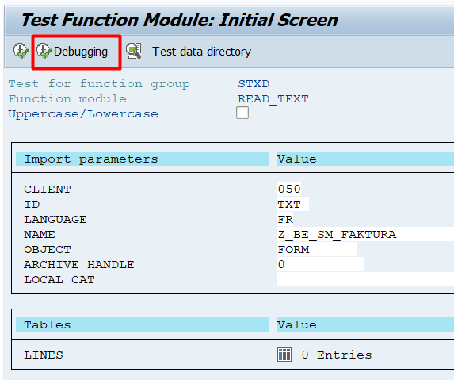
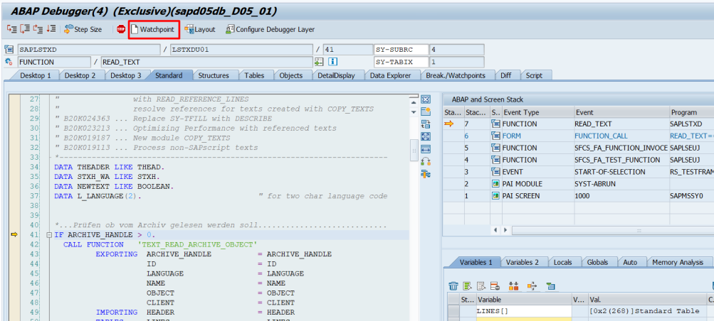
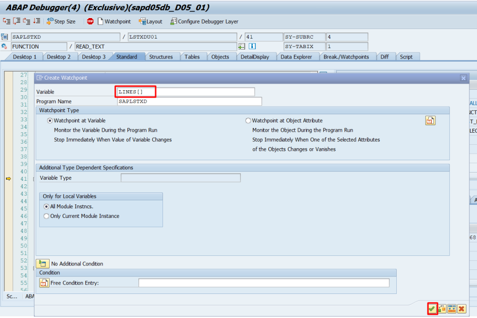
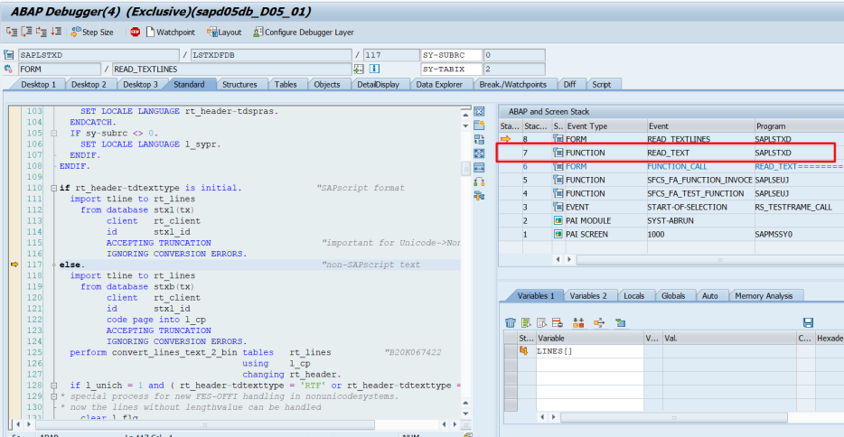
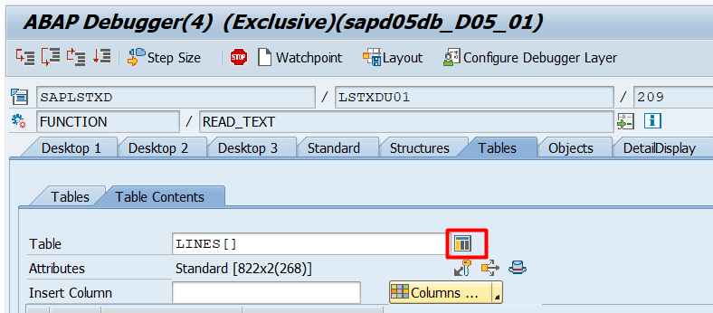

Tip: Alt-click (or Shift-click) a node to expand or collapse its whole branch at once.
Paste a script, then click "Build tree". Windows (/W), elements (/E), IF/CASE logic and text lines will appear here as a collapsible tree.
Paste a script, then click "Build tree". It will appear here re-indented like ABAP source, with the original SAP line numbers.
Getting your SAPSCRIPT text out of SAP
Read it out of the form's text table with function module READ_TEXT in the debugger, then copy the two columns you need straight into this tool.
1
Open SE37 and test READ_TEXT
Go to transaction SE37, enter function module READ_TEXT, and fill in the 4 import parameters:
ID
TXT (fixed value)
LANGUAGE
the SE71 SAPSCRIPT language, e.g. FR
NAME
the SE71 SAPSCRIPT form name, e.g. Z_BE_SM_FAKTURA
OBJECT
FORM (fixed value)
Then click Debugging instead of Execute.

2
Set a watchpoint
Once the debugger opens, click Watchpoint in the toolbar.

3
Watch the LINES[] variable
In the Create Watchpoint dialog, enter LINES[] as the variable (program name SAPLSTXD) and confirm.

4
Run to the READ_TEXT stack
Execute with F8. When the watchpoint stops execution, double-click the READ_TEXT entry in the call stack on the right.

5
Preview LINES[] as a table
LINES[] is now filled with the full SAPSCRIPT text. Double-click it (in the Tables tab) and click the grid icon to preview it as an ALV table.

6
Copy the two columns
Scroll (Page Down) to the last row so the whole table has loaded, then select the TDFORMAT and TDLINE columns and copy them with Ctrl+C. Paste directly into the box on the left of this page and click Build tree.